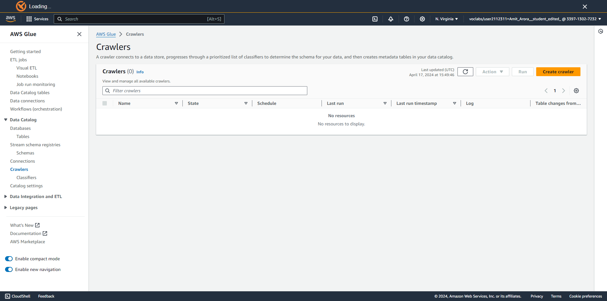
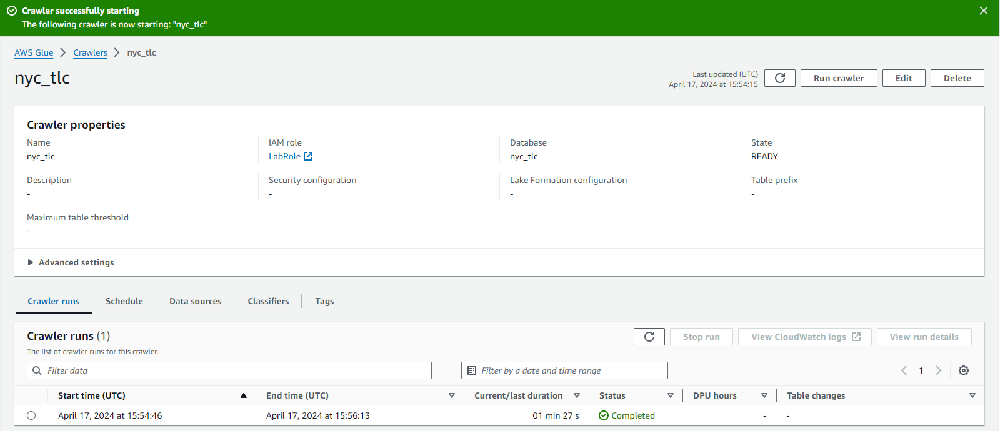
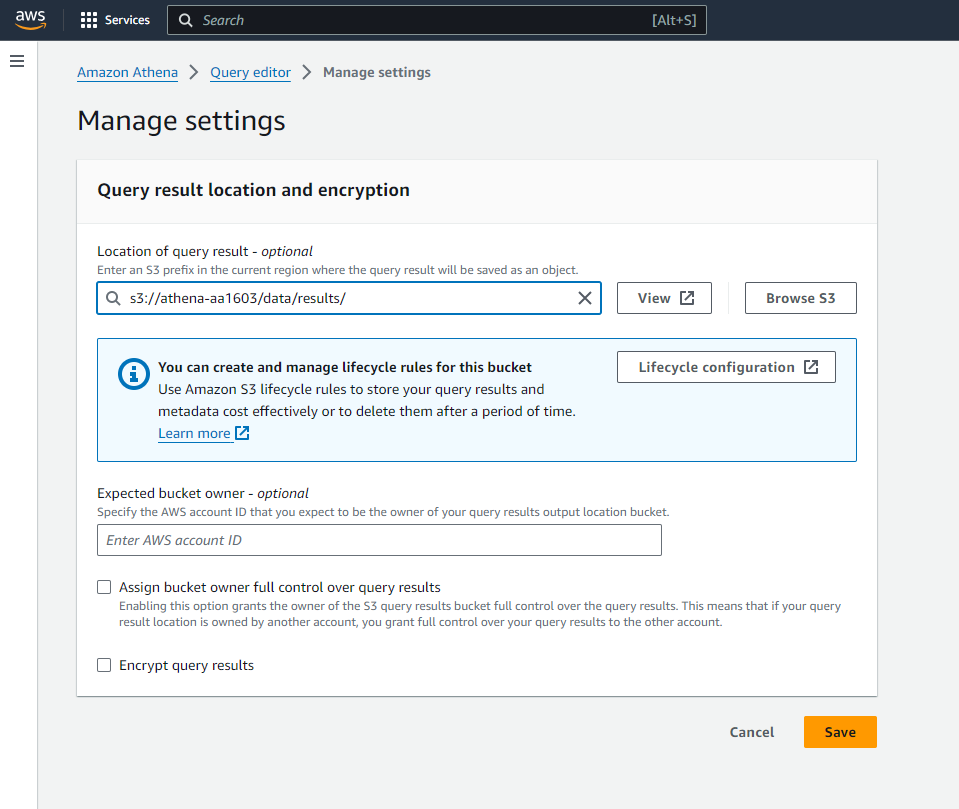
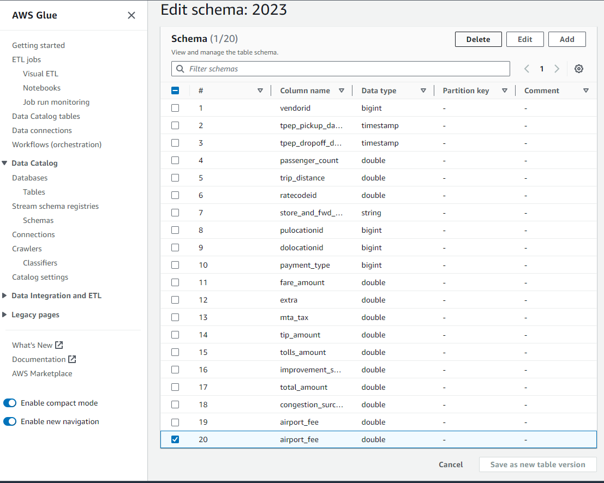
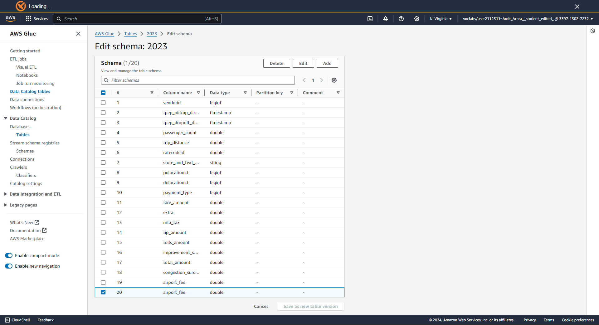

Serverless Analytics: Amazon Athena and Airflow Orchestration
Important
The second midterm takes place this weekend. You will work with a Spark cluster on your EC2 instance.
This will be a take home exam, with a duration of 2 hours. When you fork this repo from GH Classroom, it will generate an initial commit will a timestamp. You will be graded based on the last commit within 2 hours of the start time. You may do this exam at any time between Friday, April 17 and Monday, April 20, but it must be done by Monday, April 20 at 11:59pm.
The link for the midterm will be available on Blackboard in the Week 12 space after midnight tonight.
Because of the emphasis on commit times, please commit often to make sure your work will be graded, even for partial credits.
Tools we’ve used so far, and where Athena + Airflow slot in:
Data sources
↓
[S3] ←──────────────────── data lake (raw Parquet/CSV)
↓
[Glue Data Catalog] ←─────── schema registry (databases, tables)
↓
[Athena] ─────────────────── serverless SQL, pay-per-scan
↓
[Airflow / MWAA] ──────────── orchestration: schedule, backfill, retry
↓
Downstream: ML models, dashboards, reportsNote
Spark (Weeks 8–11) is also a valid query/ML engine on S3 — Athena is the serverless, SQL-only complement for interactive analytics without cluster management.
Imagine you have 6 months of NYC Yellow Taxi trip records in S3 — about 300 MB of Parquet files.
The problem:
Amazon Athena is a serverless, interactive query service that lets you analyze data in Amazon S3 using standard SQL.
What you get:
Pricing model:
Separate compute from storage
Athena’s breakthrough is schema-on-read: your data lives in S3 in its native format. Athena reads it at query time — no ingestion, no loading, no ETL into a proprietary store.
Traditional data warehouse Athena
───────────────────────────── ──────────────────────────
1. Extract from source 1. Drop files in S3
2. Transform into warehouse schema 2. Register schema in Glue Catalog
3. Load into proprietary storage 3. Query immediately with SQL
4. Pay for always-on compute 4. Pay only when querying
5. Manage clusters, scaling, backups 5. Nothing to manage┌──────────────────────────────────────────────────────┐
│ Your SQL query │
└─────────────────────┬────────────────────────────────┘
│ submit
▼
┌──────────────────────────────────────────────────────┐
│ Athena Query Engine (Presto/Trino) │
│ ┌─────────────────┐ ┌─────────────────────────┐ │
│ │ Query planner │────▶│ Distributed executors │ │
│ └────────┬────────┘ └──────────┬──────────────┘ │
└───────────┼──────────────────────────┼───────────────┘
│ look up schema │ read data
▼ ▼
┌─────────────────────┐ ┌───────────────────────────┐
│ AWS Glue Data │ │ Amazon S3 │
│ Catalog │ │ s3://bucket/prefix/*.parq │
│ (databases, tables)│ └───────────────────────────┘
└─────────────────────┘
│ write results
▼
┌─────────────────────────────────────────────────────┐
│ Results bucket: s3://bucket/data/results/<id>.csv │
└─────────────────────────────────────────────────────┘The Glue Data Catalog is the metadata store shared by Athena, EMR, Redshift Spectrum, and Glue ETL.
Key concepts:
Key properties stored per table:
Location: s3://bucket/prefix/
InputFormat: Parquet / ORC / CSV / JSON
Columns: name, type pairs
Partitions: year=2023/month=01/…
SerDe: org.apache.hadoop.hive.ql
.io.parquet.serde.ParquetHiveSerDeTip
The Glue Catalog is free up to 1 million objects; additional objects billed per million per month.
Glue → Crawlers → Create
↓ Configure S3 source
↓ Assign IAM role
↓ Choose output DB
↓ Run crawler
↓ Table auto-createdPros: zero schema knowledge needed Cons: inference can go wrong (duplicate columns, wrong types)
Best for: discovery of new/unknown data
Pros: exact schema control, CI-friendly Cons: must know the schema upfront
Best for: production pipelines with stable schemas
Athena charges per byte scanned. Columnar storage makes this much cheaper.
Row-oriented (CSV):
trip_id, distance, fare, tip, passenger
1001, 2.3, 12.5, 2.0, 1
1002, 8.7, 28.0, 4.5, 2
... (all columns, every row)SELECT avg(fare) → scans every column
Column-oriented (Parquet):
[trip_id column: 1001, 1002, ...]
[distance column: 2.3, 8.7, ...]
[fare column: 12.5, 28.0, ...] ← only this
[tip column: 2.0, 4.5, ...]SELECT avg(fare) → scans only fare column
Note
Real-world impact: a query on a 1 TB CSV table that touches 3 of 30 columns might scan ~100 GB as Parquet — saving ~$4.50 per query execution.
| Scenario | Data scanned | Cost (est.) |
|---|---|---|
| 6-month NYC taxi (Parquet) | 300 MB | < $0.01 |
| Same data in CSV | ~2.5 GB | ~$0.01 |
| 1 year of taxi (Parquet, unpartitioned) | 600 MB | ~$0.003 |
| 1 year of taxi (Parquet, partitioned by month) | 50 MB per month-query | ~$0.0003 |
| Large analytics table, 10 TB CSV | 10 TB | $50.00 |
| Same, converted to ORC with partitions | ~500 GB | $2.50 |
Tip
The two most impactful cost-reduction moves: (1) convert to Parquet/ORC, (2) partition your data.
The bucket serves as your entire data lake for this lab:
s3://athena-<netid>/
data/
2023/ ← raw Parquet taxi files
results/ ← Athena query results (required!)
shelter_data/ ← Lab 12: shelter counts Parquet
weather_data/ ← Lab 12: weather-augmented Parquet
athena-counts-temp/ ← Lab 12: Athena result spillDownload 6 months of NYC TLC Yellow Taxi trip records directly into S3:
Note
The wget ... | aws s3 cp - pipeline streams from the CDN directly into S3 — no local disk needed. Each file is ~47–58 MB of compressed Parquet.
Expected output:
2025-01-15 12:03:22 47,673,424 yellow_tripdata_2023-01.parquet
2025-01-15 12:03:31 51,241,008 yellow_tripdata_2023-02.parquet
2025-01-15 12:03:40 58,492,817 yellow_tripdata_2023-03.parquet
2025-01-15 12:03:49 57,891,230 yellow_tripdata_2023-04.parquet
2025-01-15 12:03:57 54,308,645 yellow_tripdata_2023-05.parquet
2025-01-15 12:04:06 51,027,193 yellow_tripdata_2023-06.parquet6 files, ~320 MB total. A full year’s worth is a $0.003 Athena query.

Navigate: AWS Console → Glue → Data Catalog → Crawlers → Create crawler
Configure: name nyc_tlc, S3 source s3://athena-<netid>/data/2023/, IAM role LabRole, output database nyc_tlc

After a successful run, Glue creates table 2023 in database nyc_tlc — the folder name becomes the table name.
Required before any query will run
Athena stores every query result as a CSV in S3. You must set this location before running your first query — Athena will refuse otherwise.
Console: Settings → Manage → Query result location: s3://athena-<netid>/data/results/

Athena uses a three-part name: catalog.database.table
Note
"AwsDataCatalog" is the default catalog — the Glue Data Catalog for your account. Athena also supports federated queries to other catalogs (RDS, DynamoDB, etc.) via Lambda connectors.
The result: ~19.5 million rows across 6 months of Yellow Taxi trips.
The crawler can mis-infer schema — notably, the airport_fee column appears twice in the NYC taxi data.

Fix: Glue Data Catalog → Tables → 2023 → Edit schema → delete the duplicate airport_fee row → Save as new table version

approx_percentilePresto/Trino includes approximate aggregation functions that are much faster than exact percentile computation on large datasets.
Note
approx_percentile uses a TDigest sketch — it processes data in a single pass and uses O(1/ε) memory, making it practical for 20M+ row tables where exact percentiles would require a full sort.
Compute interquartile range in a scalar sub-query, then cross-join to the full table:
This scalar query returns one row with Q1, Q2, Q3 — the basis for the IQR fence.
IQR = Q3 − Q1 Lower fence = Q1 − 1.5 × IQR Upper fence = Q3 + 1.5 × IQR
SELECT * FROM (
SELECT
t.pulocationid, t.dolocationid,
t.tpep_pickup_datetime, t.tpep_dropoff_datetime,
t.trip_distance,
q1, q2, q3,
(q3 - q1) AS iqr,
CASE
WHEN t.trip_distance < (q1 - 1.5 * (q3 - q1))
OR t.trip_distance > (q3 + 1.5 * (q3 - q1))
THEN 'Anomaly'
ELSE 'Normal'
END AS trip_distance_anomaly
FROM
(SELECT
approx_percentile(trip_distance, 0.25) AS q1,
approx_percentile(trip_distance, 0.50) AS q2,
approx_percentile(trip_distance, 0.75) AS q3
FROM "AwsDataCatalog"."nyc_tlc"."2023"
WHERE trip_distance > 0 AND trip_distance < 100
) AS quartiles,
"AwsDataCatalog"."nyc_tlc"."2023" AS t
WHERE t.trip_distance > 0
) AS anomaly_detection
WHERE trip_distance_anomaly = 'Anomaly'
LIMIT 1000;A cross-join of a one-row scalar sub-query against the full table is efficient — Presto broadcasts the scalar side.
Partitioning splits data into S3 sub-paths that Athena can prune at query time.
Hive-style partition layout:
s3://bucket/trips/
year=2023/
month=01/
part-00000.parquet
month=02/
part-00000.parquetDDL with partitions:
Impact:
| Query | Scanned |
|---|---|
| All data (no partition) | 100% |
WHERE month=03 (partitioned) |
~8% |
WHERE year=2023 AND month=03 |
~1.4% |
Use partition projection to avoid MSCK REPAIR TABLE on new partitions — declare the range in table properties.
Target: 128 MB – 512 MB per Parquet/ORC file
Too many small files → high S3 LIST overhead and request fan-out Too few huge files → poor parallelism and slow query startup
Compression codecs:
| Codec | Speed | Ratio | Splittable |
|---|---|---|---|
| SNAPPY | Fast | Moderate | No |
| ZSTD | Fast | High | No |
| GZIP | Slow | High | No |
| LZ4 | Fastest | Low | No |
For Athena: ZSTD is the sweet spot — better compression than Snappy, nearly as fast.
Tip
Parquet files are block-level splittable even without a splittable codec because the row group metadata allows Athena to skip groups.
For files < 64 MB: compact with CTAS before production use.
CREATE EXTERNAL TABLEFrom Lab 12 — creating the shelter counts table without a crawler:
Run this via the Athena console or with the CLI:
| Crawler | Explicit DDL | |
|---|---|---|
| Schema knowledge | Not needed | Required |
| Schema accuracy | Best-effort inference | Exact |
| Updates | Re-run crawler | ALTER TABLE or recreate |
| CI/CD friendly | Harder | Yes (SQL files in git) |
| New data sources | ||
| (unknown format) | ✅ | ❌ |
| Production pipelines | ❌ | ✅ |
| Airflow-managed ETL | ❌ | ✅ |
Tip
Use the crawler to discover and prototype. Switch to DDL once the schema is stable and pipelines are automated.
Athena can write results back to S3 — useful for materializing expensive queries.
Warning
INSERT INTO is limited — Athena does not support UPDATE or DELETE (it’s not a transactional store). For upsert patterns, use CTAS with a filter or Apache Iceberg tables.
import boto3, time, os
import pandas as pd
S3_BUCKET_NAME = "athena-your-netid"
SCHEMA_NAME = "nyc_tlc"
S3_STAGING_PREFIX = "data/results"
S3_STAGING_DIR = f"s3://{S3_BUCKET_NAME}/{S3_STAGING_PREFIX}/"
AWS_REGION = "us-east-1"
athena_client = boto3.client("athena", region_name=AWS_REGION)
s3_client = boto3.client("s3", region_name=AWS_REGION)Note
On EC2 with the LabRole instance profile attached, boto3 picks up credentials automatically — no aws configure needed.
start_query_executionquery = """
SELECT pulocationid,
count(*) AS trip_count
FROM "AwsDataCatalog"."nyc_tlc"."2023"
GROUP BY pulocationid
ORDER BY trip_count DESC
LIMIT 5
"""
response = athena_client.start_query_execution(
QueryString=query,
QueryExecutionContext={"Database": SCHEMA_NAME},
ResultConfiguration={
"OutputLocation": S3_STAGING_DIR,
"EncryptionConfiguration": {"EncryptionOption": "SSE_S3"},
},
)
query_id = response["QueryExecutionId"]start_query_execution returns immediately — Athena executes asynchronously.
# Poll until the query finishes
while True:
try:
athena_client.get_query_results(QueryExecutionId=query_id)
break
except Exception as err:
if "not yet finished" in str(err):
time.sleep(0.5)
else:
raise err
# Athena writes the result CSV to S3
result_key = f"{S3_STAGING_PREFIX}/{query_id}.csv"
s3_client.download_file(S3_BUCKET_NAME, result_key, "result.csv")
df = pd.read_csv("result.csv")
print(df)start_query_execution()
│
▼
[QUEUED] ─── waiting for an executor slot
│
▼
[RUNNING] ─── scanning S3, computing aggregations
│
▼
[SUCCEEDED] ─── result CSV written to s3://…/results/<id>.csv
│
▼
download from S3 → pd.read_csv()Tip
For production use, prefer get_query_execution with exponential backoff over the tight polling loop shown here. AWS also provides the Athena JDBC driver for BI tools that need a blocking interface.
IAM-based (what we use in class):
LabRole is pre-granted:
s3:GetObject on lab bucketsglue:GetTable, glue:GetDatabaseathena:StartQueryExecutionathena:GetQueryResultsLake Formation (production):
WHERE department = 'finance' enforced at the catalog| Limit / Gotcha | Detail |
|---|---|
| Query timeout | 30 minutes max per query |
| Result location | Must be set before first query — Athena refuses to run without it |
ON CONFLICT |
Not supported — Athena/Presto is not a transactional engine |
UPDATE / DELETE |
Not supported for external tables (use Iceberg for ACID) |
| Hive-style identifiers | Column names must be lowercase; mixed-case requires quoting |
| Schema-on-read | No validation at write time — bad files silently return NULLs |
| Duplicate crawler columns | airport_fee gotcha — always verify schema after crawling |
Key takeaways:
The next question
You’ve queried static Parquet in S3. But what if new data arrives every day and you want to:
→ Apache Airflow
You have a working ETL script. Now imagine running it daily, for years, across multiple data sources.
What goes wrong with simple cron:
What orchestration gives you:
┌─────────────────────────────────────────────────────┐
│ Apache Airflow │
│ │
│ ┌──────────┐ parse ┌─────────────────────────┐ │
│ │ DAG │─────────▶ Scheduler │ │
│ │ files │ │ (triggers task runs) │ │
│ │ (Python) │ └────────────┬────────────-┘ │
│ └──────────┘ │ enqueue │
│ ▼ │
│ ┌──────────┐ ┌─────────────────────────┐ │
│ │ Web UI │◀────────│ Executor │ │
│ │ (monitor)│ status │ (runs the tasks) │ │
│ └──────────┘ └─────────────────────────-┘ │
│ │ │
│ ┌─────────────────────────────────▼───────────────┐ │
│ │ Metadata DB (SQLite in dev / Postgres in prod) │ │
│ └─────────────────────────────────────────────────┘ │
└─────────────────────────────────────────────────────┘| Term | What it is |
|---|---|
| DAG | Directed Acyclic Graph — the workflow definition; a Python file |
| Task | A single unit of work within a DAG |
| Operator | Template for a task type (PythonOperator, BashOperator, S3KeySensor…) |
| Sensor | Operator that waits for a condition (file exists, API ready) |
| Hook | Abstraction over an external service (S3Hook, HttpHook…) |
| Connection | Named credential stored in the metadata DB |
| XCom | Cross-communication: pass small values between tasks |
| Data interval | The logical time window a DAG run represents |
| Backfill | Running past intervals to populate historical data |
from airflow import DAG
from airflow.providers.standard.operators.python import PythonOperator
shelter_dag = DAG(
dag_id="01a_shelter_model_manual",
schedule=None, # manually triggered — no schedule
max_active_runs=1, # never overlap concurrent runs
)
with shelter_dag:
extract = PythonOperator(
task_id="extract_raw_report",
python_callable=_extract_raw_report,
op_kwargs={
'year': '{{ data_interval_start.year }}',
'month': '{{ data_interval_start.month }}',
'day': '{{ data_interval_start.day }}',
'reports_base_url': 'https://…/nyc-shelters',
},
)
transform = PythonOperator(task_id="transform_counts",
python_callable=_transform_counts, ...)
write = PythonOperator(task_id="write_counts",
python_callable=_write_counts, ...)
extract >> transform >> write # dependency DSLThe { data_interval_start.year } in op_kwargs is Jinja templating — Airflow resolves it at runtime to the logical date of the DAG run.
Why this matters for backfill:
When you backfill Jan 1 – Oct 30 2025, Airflow creates 303 DAG runs, each with the correct data_interval_start. Your task function always receives the right date without you writing any date-looping logic.
Warning
Common mistake: using datetime.today() inside a task instead of the templated date. This breaks idempotency and makes backfill produce wrong results.
Backfill: ask Airflow to run a DAG for all past intervals between two dates.
Key settings for safe backfill:
Lab 12’s four-stage DAG progression teaches the full ETL-to-cloud arc:
01a: Extract → Transform → Write (local CSV)
│
│ add: generate INSERT SQL
▼
01b: Extract → Transform → Write → gen_query (backfill-ready)
│
│ replace local write with Athena load
▼
01c: Extract → Transform → gen_query → load_into_db ← boto3 INSERT into shelter_counts
│
│ add: train model on accumulated data
▼
01d: Extract → Transform → gen_query → load_into_db → train_and_evaluateNote
The architectural pivot in 01c — swapping local CSV for S3+Athena — is the key insight: the task code changes minimally, but the data now lives in a queryable, scalable cloud store instead of a single machine’s disk.
DAGs support parallel branches — multiple tasks that can run concurrently after a shared upstream completes.
┌──────────────────┐
│ extract_report │
└────────┬─────────┘
│
┌───────┴────────┐
▼ ▼
transform_counts transform_weather ← run in parallel
│ │
└───────┬────────┘
▼
gen_sql_query
▼
load_into_athena
▼
train_and_evaluateThe weather data (NOAA GHCND) adds 7 new columns: tmin, tmax, awnd, wsf2, prcp, snow, snwd
shelter_weather TableThe 13-column schema that merges shelter counts with NOAA weather:
CREATE EXTERNAL TABLE IF NOT EXISTS shelter_weather (
year INT, month INT, day INT,
adults INT, children INT, total INT,
tmin DOUBLE, tmax DOUBLE, -- daily temp range (tenths °C)
awnd DOUBLE, -- avg wind speed (m/s)
wsf2 DOUBLE, -- fastest 2-min wind (m/s)
prcp DOUBLE, -- precipitation (tenths mm)
snow DOUBLE, -- snowfall (mm)
snwd DOUBLE -- snow depth (mm)
)
STORED AS PARQUET
LOCATION 's3://athena-<netid>/weather_data/';Payoff: a DecisionTreeRegressor on [tmin, tmax, awnd, …] → total achieves lower RMSE than predicting from day-of-month alone — the ETL extension is validated empirically.
Lab 12’s gen_sql_query task generates this INSERT:
ON CONFLICT is Postgres syntax — not valid in Athena/Presto
Athena is a read-optimized query engine. It has no row-level conflict detection, no primary keys, and no transactional guarantees. Running this SQL against Athena will raise a parse error.
Fix options: - Remove ON CONFLICT and prevent duplicate writes at the pipeline level (idempotent task logic) - Use Apache Iceberg tables on Athena for ACID operations - Filter duplicates out with a WHERE NOT EXISTS(...) sub-query on read
In Lab 12, Airflow runs on a single EC2 instance using airflow standalone — a development-mode process that combines all components:
# One-time setup
export AIRFLOW_HOME="$(pwd)/airflow-home/"
export AIRFLOW__CORE__LOAD_EXAMPLES=False
airflow db migrate # initialize SQLite metastore
# Start Airflow (all components in one process)
airflow standalone
# → Web UI at http://<ec2-ip>:8080
# → Admin password in airflow-home/simple_auth_manager_passwords.json.generatedNote
airflow standalone is for development only — single-node, SQLite. Production uses separate scheduler, API server, and Celery or Kubernetes executor with Postgres.
Amazon Managed Workflows for Apache Airflow (MWAA) is the fully managed, production version.
How it works:
requirements.txt and dags/ to an S3 bucketEnvironment sizes:
| Size | vCPUs | Memory |
|---|---|---|
| mw1.small | 2 | 4 GB |
| mw1.medium | 4 | 8 GB |
| mw1.large | 8 | 16 GB |
| mw1.xlarge | 16 | 32 GB |
Priced per environment-hour + additional worker costs.
| Local on EC2 | Amazon MWAA | |
|---|---|---|
| Setup | Minutes | Hours (VPC, IAM, S3 policy) |
| Cost | EC2 instance only | $0.49–$4.18 /env-hour |
| HA | No | Yes (multi-AZ) |
| DAG deployment | Copy to dags/ |
S3 sync |
| Secrets | Env vars / files | AWS Secrets Manager |
| Logging | Local filesystem | CloudWatch |
| Airflow version | Any | AWS-managed (1–2 versions behind) |
| Best for | Dev, class labs | Production workloads |
Tip
The same DAG Python code runs on both — that’s Airflow’s value proposition. You develop locally and promote to MWAA without rewriting your pipelines.
Schedule expressions:
Catchup and depends_on_past:
Retry policy:
Warning
depends_on_past=True on a backfill run means each interval must succeed before the next starts — useful for strict data dependencies, but slows down historical backfills.
Airflow Web UI views:
MWAA-specific:
TasksPending, WorkersActive, QueuedTasksAirflow is powerful but not always the right tool:
| Need | Better choice |
|---|---|
| Simple daily cron, no dependencies | Unix cron / AWS EventBridge |
| Sub-minute latency | Kinesis, Kafka, Spark Streaming |
| True streaming (unbounded) | Spark Structured Streaming (Week 11) |
| Real-time event-driven | AWS Lambda + SQS |
| Complex graph with heavy data passing | Prefect, Dagster (first-class data assets) |
| ML experiment tracking | MLflow, W&B (complement, not replace) |
Note
Airflow excels at batch pipelines with external dependencies — “run this when this other thing is done, retry on failure, alert on SLA breach, backfill if I miss days.” That’s exactly the Athena ETL use case.
External sources (APIs, PDFs, S3 CDN)
│
▼ [Airflow: extract task]
Raw files (local or S3 staging)
│
▼ [Airflow: transform task]
Typed Parquet files
│
▼ [Airflow: load task — boto3 INSERT via Athena]
S3 data lake + Glue Data Catalog
s3://athena-<netid>/shelter_data/*.parquet
│
▼ [Athena: interactive SQL / scheduled CTAS]
Aggregated results / feature tables
│
▼ [Airflow: ML task — scikit-learn on Athena query result]
Model evaluation (naive_rmse → weather_rmse comparison)
│
▼
Reports, dashboards, downstream consumersAmazon Athena:
Apache Airflow:
Course resources:
Good luck!